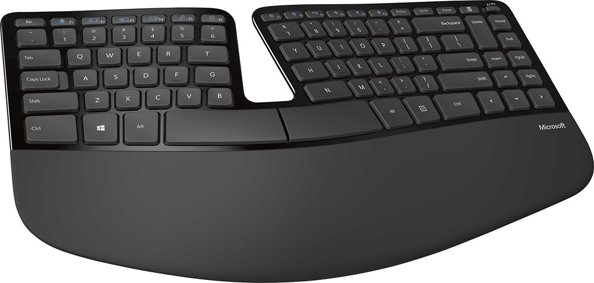

Qu'est-ce qu'un clavier à membrane ?
La plupart des claviers d'ordinateur AZERTY utilisent une seule membrane en caoutchouc sous les touches qui entre en contact avec une carte de circuit imprimé lorsque la touche est enfoncée à fond. Appelé aussi "clavier à dôme", ce style se retrouve sur de nombreux types de claviers. La sensation tactile des claviers à membrane est moindre que celle des claviers à touches individuelles (voir clavier mécanique).
Un clavier qui tolère la saleté et les renversements qui, autrement, provoqueraient la défaillance d'un clavier ordinaire. Les claviers à membrane utilisent une feuille de plastique souple sur laquelle est imprimé le motif des touches sur le dessus et une encre conductrice d'électricité sur le dessous. Lorsqu'une touche est enfoncée, elle pousse la couche supérieure vers le bas à travers une couche d'espacement de trous et entre en contact avec le circuit du bas. Largement utilisé dans les applications de libre-service, il peut y avoir peu de mouvement dans les touches, et un bip ou une LED est souvent utilisé pour le retour d'information. Le clavier à membrane est un clavier parfait pour les développeurs.
Définition d'un clavier à membrane
Venons-en au premier type de clavier appelé membrane. Il utilise trois couches différentes dans sa conception, qui sont très flexibles. La première couche est appelée la couche supérieure de la membrane, sous la partie supérieure il y a une trace conductrice. Lorsque l'on appuie sur une touche, celle-ci passe à travers la deuxième couche, qui est constituée de trous, permettant ainsi aux coussinets de pression situés sous chaque touche de passer et d'entrer en contact avec les traces conductrices situées au-dessus de la couche inférieure de la membrane.
Deux types de dessins sont utilisés. Le premier est le modèle à clé plate, qui est couramment utilisé sur les fours à micro-ondes. Les touches de ce modèle sont imprimées sur le même tampon. Il utilise toujours un tampon de pression, mais comme il ne fournit pas de "retour d'information physique" notable, il est difficile à utiliser sur un clavier d'ordinateur, dont les dactylos se fient à des retours d'information physiques pour taper en clignant des yeux. L'autre type de clavier, appelé "dome switch keyboard", utilise un dôme avec des lettres imprimées sur le dessus, parfois elles sont imprimées sur ou étirées au laser. Ce type de clavier utilise un clavier en caoutchouc ou en silicone dont la membrane supérieure est constituée d'un dôme. Lorsque les dômes sont enfoncés, ils s'affaissent et le graphite sous le dôme complète le circuit sous le coussinet de la membrane, envoyant ainsi le signal d'une touche enfoncée.
Avantages d'un clavier à membrane
- Expérience de la dactylographie similaire à celle du clavier mécanique Le clavier à interrupteurs à dôme utilise des dômes en caoutchouc ou en silicone pour simuler la structure à ressort d'un clavier mécanique, ce qui donne à ce type de clavier des réactions physiques solides. Bien qu'il existe une différence entre l'expérience de frappe des claviers à membrane et celle des claviers mécaniques, avec les progrès de la technologie, l'écart entre les deux se réduit.
- Relativement silencieux Alors que taper sur n'importe quel clavier à grande vitesse peut être bruyant, les claviers à membrane ont une meilleure réputation que les claviers mécaniques pour ce qui est du volume sonore. Certains claviers mécaniques, en particulier les touches bleues, peuvent être très bruyants, bien que cela ne soit pas une mauvaise chose car certains dactylos apprécient ce son.
- Plus portable Les claviers à membrane sont généralement en plastique, ce qui les rend plus légers que les claviers mécaniques, qui ont une plus grande proposition d'engrenages métalliques. Vous pouvez facilement transporter un clavier à membrane léger et taper sur vos genoux si vous le souhaitez.
- Abordable Comme les claviers à membrane peuvent être fabriqués avec des matériaux communs et une technologie mature, un clavier à membrane sera plus abordable qu'un clavier mécanique qui présente les mêmes caractéristiques.
Inconvénients d'un clavier à membrane
- Sentiments de la dactylographie Les touches demandent plus d'effort pour taper, lorsque vous appuyez sur la touche. Certains dactylographes ont constaté que les claviers à membrane sont "mous" pour taper, ce qui affecte leur expérience de la dactylographie.
- Roulement des touches Si vous êtes un dactylographe rapide, il arrivera que les touches ne soient pas enregistrées en tant que succès car la touche n'a pas été enfoncée jusqu'au bout. Cela m'arrive tout le temps.
- Durée de vie Bien qu'il ait une durée de vie de plusieurs millions de touches et dure des années, le clavier à membrane peut s'user plus rapidement qu'un clavier mécanique, mais lorsqu'il s'use, la membrane commence à être plus molle, ce qui entraîne une perte de rétroaction des touches.
- Nettoyage Si vous pouvez enlever les capuchons des claviers mécaniques pour nettoyer le clavier, il est plus difficile de nettoyer un clavier à membrane car les capuchons ne sont généralement pas amovibles.
Les claviers membranes ne sont peut-etre pour vous pourquoi ne pas essayer le clavier mécanique